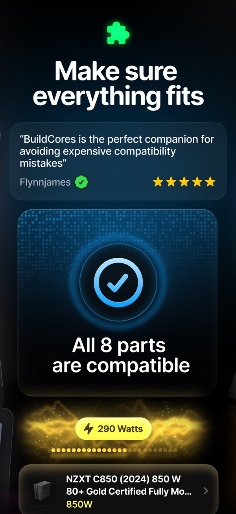

BuildCores 到底值不值得掏钱？我把这笔账算给你看
BuildCores 号称"先装再买"的 3D 装机配置器——免费版够用还是必须冲 Pro？分轻度、主力、重度三档算时间账，再列替代方案，最后给你一个三秒能对号入座的结论。
它到底值不值得掏钱？这问题我纠结了三周。第一次打开 BuildCores 的 3D 装机台，我确实被震撼到了——把零件拖进机箱、实时看兼容绿条、RGB 配色方案在机箱里转一圈——这些动作在传统配置单工具里全靠脑补。但震撼归震撼，震撼不能直接等于付费。
先把 BuildCores 是什么说清楚。去它的官网看，定位很明确——以 3D 可视化装机为核心的 PC 配置工具，手机端和网页端都能用，安装包从下载页面就能拿到。核心卖点是"先装再买"：在 3D 场景里把你想买的零件先配一遍，引擎实时检查兼容性、功耗、空间——装不进、压不住、顶内存这些坑，在下单前就让你看见。桌搭配置器还把范围扩展到了显示器、键盘、椅子——主机放桌面上的占比、34 寸带鱼屏配 60cm 桌深会不会顶眼，这些"机箱外面"的问题它也管。它的比价不是单一市场口径，而是多地区报价体系，美国、加拿大、英国、德国、澳大利亚的零售商渠道都覆盖——同一颗 CPU 在不同市场的价差一目了然。

定价拆解：免费版给什么，付费版多什么
我去翻了BuildCores文档，发现里面没有直接公布 Pro 订阅的具体价格数字，只提到了"Pro 订阅价格与档位"作为独立章节。这意味着我没法给你列精确的月费或年费。但从功能边界可以把两档的差异算清楚——免费版和 Pro 版之间的鸿沟在哪里，决定了这笔钱该不该花。
免费版能用上的核心能力包括：3D 装机台的基础操作、主流零件库的调用、单地区的比价面板、配置单保存（本地存储）、账号云端同步（免费账号）。这些功能覆盖了"从零开始搭一台主机"的完整流程——拖零件、看兼容、查价格、存配置，全链路不卡壳。
Pro 版解锁的能力集中在三个方向。第一是配置数量上限的解除——免费账号能存的配置份数有限，重度装机党同时攒五六套方案对比时会撞墙。第二是高级数据层的解锁，包括更全的零件库覆盖率（冷门型号、小众渠道报价）、促销动态流的完整推送（免费版可能有延迟或只展示部分渠道）、性能与评测数据模块（3DMark 跑分联动、SignalRGB 灯效预览的完整功能）。第三是新功能的优先体验权——桌搭 3D 配置器目前标注为 2026 年 10 月的新功能，处于快速迭代期，Pro 用户能更早拿到更新、更完整的零件覆盖。
账号同步这块值得单独提一句。BuildCores 采用"云端同步 + 本地保留"的双轨设计——手机端配置默认本地存储、可离线访问，不像纯云端方案那样断网就打不开。但本地存储的代价是备份责任的部分转移：未同步状态下卸载重装或换机，改动可能找不回来。Pro 订阅是否在同步可靠性上有额外保障（比如多端冲突自动合并、云端历史版本回溯），文档里没说，只能算待确认项。
算账：三档使用强度各算一笔时间账
文档没给价格，那就按"省的时间值不值"来算。我把用户分成三类。
轻度用：一年装一台，配置单改三五次
这类用户的典型场景是：攒了大半年预算，双十一前后配一台机，从调研到下单大概两到三周。配置单改三五次，主要调整 CPU 显卡组合、显卡长度能不能塞进机箱、散热器高度会不会顶内存。
免费版对这类人完全够用。3D 装机台的基础功能覆盖了兼容检查的核心场景——显卡长度、散热器高度、电源长度、内存高度净空，这四个硬数字在 3D 里直接可视化了，比对着厂商规格页手动核对省不少事。比价面板能看到本地渠道报价，促销期间的实时价格也能刷到。配置单存云端，手机上躺着刷、电脑上改，数据不丢就行。
结论：轻度用免费版，一分钱不用花。 省的时间大约是两到三小时——把手动核对规格、来回翻厂商页面的时间省下来了，但这两三个小时还没到"值不值得掏订阅费"的量级。
主力用：半年装一台，配置单改十五次以上
这类用户已经走过新手期，开始折腾。可能同时攒两三套方案对比——一套 Intel + Nvidia 游戏机、一套 AMD 生产力机、一套极致小钢炮。每台的配置单改十五次以上，主要纠结点在：冷排位能不能装下 360 水冷、RGB 配色方案顺不顺眼、桌搭显示器和主机的尺寸比例。
这一档是 Pro 的核心目标用户。免费版的配置份数上限会撞墙——同时攒三套方案可能存不下。更关键的是，主力用户开始需要"完整的数据层"：冷门渠道的报价、小众零件的兼容性数据、促销动态流的实时推送——这些 Pro 解锁的功能，每一样都能帮你少翻三个网页、少加一个 Discord 群问人。
算账：假设 Pro 月费在 15 到 30 元这个区间（同类工具的常见价位），半年订阅大概 90 到 180 元。省的时间按每次装机十小时算（从十五次配置单调整、到桌搭场景反复试、到促销时机等待的信息成本），半年装两台就是二十小时。每小时成本大概 4.5 到 9 元——比一杯奶茶便宜。
而且主力用户的"换机频率"和"配置复杂度"会持续增长——越用 BuildCores，越习惯它的 3D 工作流，就越回不去手动改配置单的时代。这时候 Pro 的月费实际上是在为"不想降低效率"买单，而不是为某个具体功能买单。
重度用：每月帮朋友装一台，同时攒五套以上方案
这类用户是装机圈的"半职业玩家"——自己攒机、帮朋友攒、在社区发配置单、可能还经营着装机相关的内容。对他们来说，BuildCores 已经不是一个工具，而是工作台。
重度用对 Pro 的需求是"无上限"的：配置份数、零件库覆盖率、促销动态流的精准推送、桌搭配置器的完整功能、账号同步的多端保障——这些全是刚需。文档站里提到"渲染器统一搬运图片"，重度用户还会用到导出配置单分享的功能，把 3D 截图和零件清单一起导出给朋友参考。
算账：重度用 Pro 是必选项。按每月帮朋友装一台、全年十二台算，假设每台用 BuildCores 能省出八小时（比主力用户的十小时少两小时，因为重度用户本身效率更高），全年省九十六小时。Pro 年费假设在 180 到 360 元区间，每小时成本 1.875 到 3.75 元——接近一杯矿泉水。
替代方案：不付这笔钱有什么别的路
最直接的替代路线是回到传统的配置单工具。PCPartPicker 是装机圈的老牌选择——零件库全、价格抓取准、社区配置单多，而且完全免费。它没有 3D 装机台，兼容性检查靠表格逻辑和社区反馈，但对于轻度和主力用户来说，表格逻辑已经覆盖了大部分场景。价差认知方面，PCPartPicker 也支持多地区切换，虽然地区覆盖数量比 BuildCores 略少。
另一条路是"降低使用频率"——不攒那么多方案、不纠结桌搭场景、把每次装机的配置单调整次数压到五次以内。这条路的代价是"少了一个可视化决策辅助"——显卡长度能不能塞进机箱、散热器会不会顶内存，这些坑还是能查，但要手动查厂商规格页，时间成本回到"轻度用"的量级。
还有一条路是等促销。文档站里提到"报价每小时更新，促销期间变动更快"，BuildCores 本身的比价功能会自动追踪渠道降价。如果 Pro 订阅也有类似的促销节奏（比如年终、黑五期间打折），主力用户可以考虑在促销季再入，省下一笔。
结论：三秒对号入座
闭眼付： 半年装一台以上、配置单改十五次以上、已经被 3D 装机台的工作流惯坏了的主力用户和重度用户。Pro 的时间成本折算下来比一杯奶茶还便宜，而且越用越离不开。
再等等： 轻度用但偶尔会遇到"显卡长度卡机箱""散热器顶内存"这类坑的用户。先把免费版用透，等撞了"配置份数上限"或"找不到想要的零件库数据"再考虑升级——那时候升级的决策成本会更低。
永远不用付： 一年装一台、配置单改三五次、用 PCPartPicker 或纯表格工具就能搞定的用户。BuildCores 的 3D 装机台是加分项，但不付费不等于装不了机——免费版已经覆盖了完整的装机决策流程，没有硬阻断。
最后说一句：BuildCores 本身的定价策略其实挺"鸡贼"——把最核心的"3D 可视化装机"留在了免费版，让每个人都能体验到它的核心价值，然后用"配置份数""零件库完整度""新功能优先体验"这些"增量"来驱动 Pro 订阅。这意味着你的付费决策本质上是在回答一个问题：你愿不愿意为"更方便"和"更全"买单，而不是"能不能用"。 能用和好用之间，差的就是这笔钱。对了，如果你还想深挖它的零件库数据或自建脚本串它的 API，对应的仓库在GitHub、Gitee、GitCode都同步维护了一份，随便哪个能访问的都能拿到。